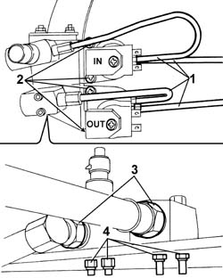
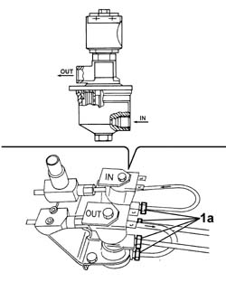
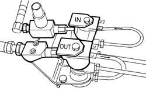

1043B43 PRESSURE REGULATOR FOR LPG FUEL SYSTEM COMPLETE WITH DELIVERY AND RETURN PIPES FROM INTERMEDIATE CONNECTOR DISMANTLE AND REBUILD AT BENCH
- Path
- Procedures > 10 ENGINE UNIT > 1043 GPL TANK AND PIPES > 1043B GPL FUEL CIRCUIT PIPES > 1043B43 PRESSURE REGULATOR FOR LPG FUEL SYSTEM COMPLETE WITH DELIVERY AND RETURN PIPES FROM INTERMEDIATE CONNECTOR DISMANTLE AND REBUILD AT BENCH
- Kind
- repair procedure (removal / refitting; the operation number is the code)
- Applies to
- engines: 2.0 16V; all production periods
- Interactive page
- https://sloeber94.github.io/elrnDB-fDct/en/#/244002676
Applies to: engines: 2.0 16V; all production periods
 Removing
Removing
 Refitting
Refitting1. Undo the connectors and remove the LPG pipes from the tank and the connector pipes.
2. Undo the fixing bolts and remove the solenoid valves.
3. Undo the connectors and remove the LPG pipes to the injectors.
4. Undo the fixing nuts and remove couplings G4 and G5.

Applies to: engines: 2.0 16V; all production periods
Refitting
Removing1. Fit the solenoid valves on the special bracket making sure they are in the position marked on their removal and tighten the fixing bolts.
2. Connect the LPG pipes from the tank making sure that they are in the position marked on their removal and tighten the connectors to the recommended torque.
Value daNm | Fastening | Component | Ø | |
|---|---|---|---|---|
- | 1.5 | Connector | M10 X 1 |
3. Connect the connector pipes making sure that they are in the position marked on their removal and tighten the connectors to the recommended torque.
Value daNm | Fastening | Component | Ø | |
|---|---|---|---|---|
- | 1.5 | Connector | M10 X 1 |

Applies to: engines: 2.0 16V; all production periods
1. Fit couplings G4 and G5 and tighten the fixing nuts to the recommended torque.
Value daNm | Fastening | Component | Ø | |
|---|---|---|---|---|
- | 0.9 | Nut | M6 X 1 |
Value daNm | Fastening | Component | Ø | |
|---|---|---|---|---|
- | 0.6 | Nut | M5 X 1 |
2. Connect the connector pipes and tighten the connectors to the recommended torque.
Value daNm | Fastening | Component | Ø | |
|---|---|---|---|---|
- | 1.5 | Connector | M10 X 1 |
3. Connect the LPG pipes to the injectors and tighten the connectors to the recommended torque.
Value daNm | Fastening | Component | Ø | |
|---|---|---|---|---|
- | 7 | Connector | M18 X 1.5 |
